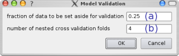

Index
Index

Model Validation
 |
In order to create a new model validation selection, just drag its item from the validation selection panel onto an existing model item within the pipeline area (a). A dialog requesting the necessary parameters will appear then. The parameters for the different model validation techniques will be explained below. |
Cross Validation
Cross Validation divides the data into k partitions and during k iterations always retrains the model on (k-1) of those partitions and uses the remaining one to evaluate the predictive quality. This is done in such a way that in total each partition is used exactly once as test set.
The average of the k folds is then used to describe the predicitve quality of the model.
The number of desired folds can be set in the dialog that shows up when dropping the validation item onto a model.Bootstrapping
Bootstrapping creates a training data by random drawing with replacement of compound from the input data set. All compounds that are not part of the created training data set together make up the test set that is used to evaluate the predictive quality after training the model by use of the former one.Since the probability of a compound to be chosen for a training set this way is approx. 0.632 and thereby the effective size of the training set (compared to the input data) is reduced, we use the so-called 0.632-estimator to alleviate this bias :
Since compounds are drawn with replacement, a high number of very diverse bootstrap samples can be created. This is in contrast to cross validation, where a very high number of folds (e.g. leave-one-out cross-validation) produces very similar training data sets; a property that is usually not desireable.
The average of the results for the k bootstrap samples is then used to describe the predicitve quality of the model.
The number of desired bootstrap samples can be set in the dialog that shows up when dropping the validation item onto a model.
Response permutation testing
Boostrapping and cross validation try to evaluate the models predictive quality make no assessment of the statistical significance of this predictive quality.It might be the case that the a model seems to able to resonable predict the response value of new data but swapping all response values (and retaining) would lead to similar results.
Thus, this is what resonse permutation testing does; it randomly permutated the response values, retains the models, applies a cross validation with the permutated data and repeates all this a number of times.
Comparison of the predictive qualities achieved with permutated response to the one obtained with unpermutated response (see cross-validation above) will show you whether your model can achieve significant modelling.
Using this model validation procedure (alongside other ones) is especially important when working with a model that has very many features or a high-dimensional kernel-function or in case of classification problems with a low number of classes.
Calculation of regression coefficients' standard deviation
In order to evaluate the variability of linear regression models, i.e. to see how the obtained regression coefficients deviated between diffent input data sets, the regression coefficients' standard deviation can be calculated. This is done by use of bootstrapping; the number of desired samples can be entered into the dialog that shows up when dropping the validation item onto a model.
After the pipeline has been executed (see here), the average ratio of the obtained standard deviation and the coefficient value of the current model will be displayed. A small value thus indicates relatively steady coefficients, whereas a high value reveals highly variant coefficients.
Furthermore, the standard deviations of all coefficients can also be plotted (see here).
Nested validation
|  | If any feature selection or model-/kernel-parameter optimization has been done, the above procedures alone can not give a realistic estimated of the true predicitve quality of the model. The reason for this is that altough during bootstrapping/cross validation many folds consisting of seperate training and testing data set are used to evaluate the model, the |
To circumvent this problem, a nested validation pipeline can be created. Therefore the existing pipeline is copied several times and each such nested validation fold is tested on data randomly chosen from the original input data set after being trained on the remaining data (i.e. the one not to be used for testing of this fold).
The number of desired nested validation folds can be entered in (b), whereas the fraction of the input data that is to be chosen randomly and set aside for validation of each fold can be set in (a).